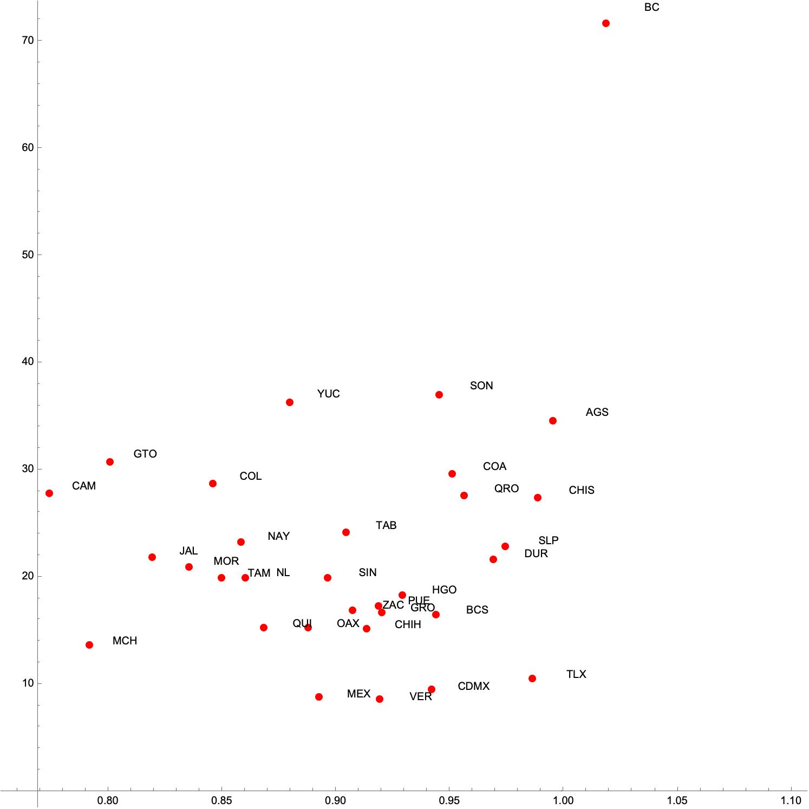

Epidemiological surveillance of the COVID-19 epidemic has generated a large amount of information regarding the dynamics of the indicators used for its control and monitoring. One of the most important indicators has been the instantaneous reproductive number or \(R_t\) . This number measures the number of secondary infections generated, on average, by a typical infectious individual. \(R_t\) has shown characteristic behaviors in different regions of the world. In some, such as Mexico and several other Latin American countries, the \(R_t\) has remained consistently around 1 with increases and decreases associated with epidemic outbreaks or waves of infection. Another index that has been used in this epidemic has been the infection risk index.
introduce a risk index for monitoring the pandemic that gives the probability of finding at time \(t\) an infected person in a group of \(k\) individuals. The formula is \[\label{eq:risk_index} C_k(t^*) = 1 - \left(1 - \frac{I(t^*)}{N(t^*)}\right)^k\] where \(\frac{I(t^*)}{N(t^*)}\) is the number of active cases present in a given locality or region on day \(t^*\). In the number of active cases is computed using the ascertainment ratio derived from data on seroprevalence and contact tracing. Our data from Mexico shows that daily risk and \(R_t\), the instantaneous reproductive number, undergo sustained oscillations. Figure [fig.bolitas] plots all the Mexican states in the \(R_t\)-risk plane divided into four quadrants: I. low transmission (\(R_t <1\)), low risk (\(C_{100}<50\%)\), II. high transmission (\(R_t >1\)), low risk (\(C_{100}<50\%)\), III. high transmission (\(R_t >1\)), high risk (\(C_{100}>50\%)\), and IV low transmission (\(R_t <1\)), high risk (\(C_{100}>50\%)\). Two different dates are shown about a month apart (10 October and 7 November). In general, the trajectory of the states goes in a counter clockwise direction moving from \(I\to II \to III \to IV\) although, in high transmission events, the states may move back and forth between quadrants III and IV. Since risk depends on the number of active cases and the depletion of these depends on the size of the active cases pool, then even if \(R_t\) is slightly below 1, high risk events may still occur. Lastly, by late December, most states have increased their \(R_t\) and and on their way of experiencing an increase of their risk in the following weeks (passing from \(II\to III\)) which, on time, would correspond to the Omicron wave of late December.
| A | |
|
|
| B | |
|  |
This behavior has motivated us to propose an epidemiological traffic light system based on the risk of contagion and the value of \(R_t\). In what follows, we present a mathematical model of a traffic light based on the Kermack-McKendrick equations that accounts for these two variables and their temporal dynamics in the presence of a relatively long-lasting epidemic.
We propose an extension of the classic Kermack-McKendrick mathematical model (see ). Our formulation considers that the total population \(N(t)\) is split into four compartments: susceptible (S(t)), infected (I(t)), recovered (R(t)), and vaccinated (V(t)). Disease dynamics is modeled as follows: susceptible individuals can become infected when interacting with an infectious individual. After a period of time \((1/\gamma)\), infected people recover. Recovered people lose their natural immunity after a period of time \(1/\theta\). Regarding vaccination dynamics, we consider that the susceptible people are vaccinated with a vaccination rate equal to \(\phi\). The vaccine is imperfect. For this reason, there is a vaccine efficacy \(\sigma\) which reduces the number of vaccinated people who can acquire the disease. Finally, those vaccinated people, that do not acquire the disease, lost their vaccine-induced immunity after a period of time \(1/\omega\). In addition, our model presents vital dynamics.